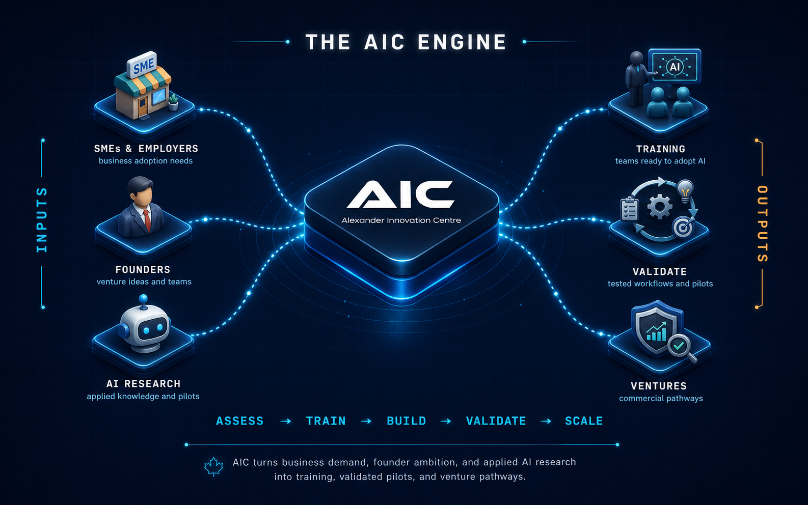

Alexander Innovation Centre
Find out where AI can save time, cut costs, and grow your business.
Alexander Innovation Centre trains Canadian businesses to put AI to work, adopting AI agents, RAG knowledge systems, voice AI, and automation workflows that cut repetitive tasks, lift productivity, and build practical, in-house AI capability. From a free readiness review to real, measurable results.
Find where AI can help
Spot where AI can save time and cut bottlenecks.
AI for Business → Train my teamBuild practical AI skills
Hands-on AI skills your team can use at work.
Train Your Team → Automate repetitive workAutomate routine work
Calls, follow-ups, bookings, and admin — handled.
Automate Work → Build or ValidateTest it before you scale
Pilots, research, and venture support.
Build & Validate AI →Training may qualify for employer funding. AIC can guide eligible employers through programs like the BC Employer Training Grant. Funding is not guaranteed.
01 About AIC
We don't just advise on AI. We build it, and we teach your team to use it.
AIC isn't a generic AI consultancy. We're building a corporate AI training and adoption academy, and our flagship is practical workforce transformation: helping Canadian teams adopt AI agents, RAG knowledge systems, voice AI, and automation workflows that cut repetitive work, lift productivity, and support human-centred business growth.
Every engagement is designed around your real business processes and delivers something you can use: working workflows, SOPs, AI tool playbooks, and measurable outcomes, not slideware. Across the Workforce Academy, Innovation Lab, Venture Studio, Compute Lab, and Alebex, we help you assess readiness, train staff, pilot real workflows, deploy responsibly, and measure impact, practically, responsibly, and at your pace.
AI agentsRAG knowledge systemsVoice AIAutomation workflows
Practical workforce transformation, train your people to use AI agents, RAG, voice AI, and automation in their real, day-to-day work.
Help Canadian organisations adopt AI in a way that's practical, responsible, and paced to their business, from readiness review to real implementation.
From AI curiosity to measurable impact.
Practical, responsible, and Canadian.
02 How AIC Works
One operating model, from idea to deployment.
We take talent and real problems from across BC's economy and move them through one disciplined engine into deployed, measurable outcomes.

Behind it all: four divisions, Workforce Academy (train & adopt), Innovation Lab (applied research & pilots), Venture Studio (build & commercialise), and Compute Lab (trusted Canadian infrastructure). You only need the one that fits your goal today.
Automate Work · powered by Alebex
Stop losing time to calls, follow-ups, and repetitive admin.
Alebex handles routine calls, reminders, bookings, follow-ups, and intake, so your team focuses on higher-value work while customers still get fast, consistent service. Built in Canada, with human escalation built in.
Missed-call recovery, booking, lead follow-up, and routine admin.
See What We Can Automate →Public AI Literacy & Ecosystem Platform
Where Vancouver's AI builders connect.
A recurring forum connecting the people building, buying, and researching AI in BC, founders, employers, researchers, students, and investors. Talks, live demos, and structured networking. Next: Agentic Workflows in Action, June 23, 2026.
Free, open, and downtown.
See Innovation Nights →
- AI agents
- Employee productivity
- Live demos
- Startup building
- Networking
04 Quick Answers
Frequently asked questions.
Where should my business start with AI?
Start with a free AI Readiness Review. AIC looks at how your work actually flows and shows you where AI will save time or money, and where it won't, before you spend on any tools.
What can AIC help automate?
Routine, high-volume work: customer calls and follow-ups, appointment booking and reminders, intake and routing, and repetitive admin, handled by Alebex with human escalation built in.
Can AIC train my team?
Yes. AIC trains owners, managers, and staff to use AI in real business tasks, from half-day briefings to multi-week cohorts, delivered in Vancouver or virtually across Canada.
Can AIC help us understand funding options?
AIC can guide eligible employers through Canadian funding pathways for training and adoption, including programs tied to Canada's AI for All strategy. Employers apply directly, and funding is not guaranteed.
Visit Us
Our Innovation Hub
Downtown Vancouver, steps from Granville Station.
Downtown Vancouver
#101 - 570 Dunsmuir Street, First Floor
Vancouver, BC V6B 1Y1
Getting Here
- SkyTrain Granville Station (2-minute walk)
- Bus Multiple routes along Granville and Dunsmuir
- Parking Nearby parkades on Seymour and Howe
Get Involved
Build practical AI with AIC.
Whether you're exploring AI adoption, looking for applied research, building a venture, or developing future-ready talent, AIC is built to help ideas become real.